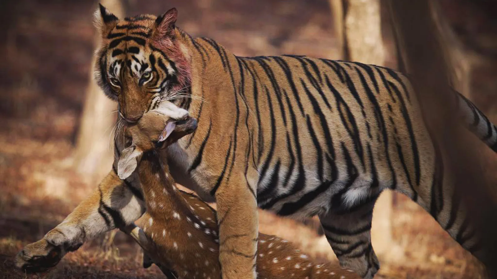
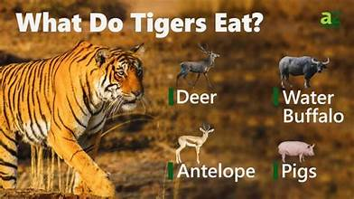
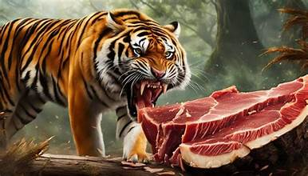

A Tigers Diet
Hunting
Tigers are apex predators with a diet that reflects their status at the top of the food chain. As obligate carnivores, their diet primarily consists of meat, and they are known for their formidable hunting skills. In the wild, tigers primarily hunt large herbivores such as deer, wild boar, and water buffalo. Their hunting strategy involves stealth and patience, often stalking their prey until they are within striking distance before launching a powerful attack. This approach is essential for bringing down animals much larger than themselves, as tigers rely on a combination of strength and agility to secure their meal.
Verying Diets
The specific composition of a tiger’s diet can vary depending on its habitat and the availability of prey. For example, tigers in India might primarily hunt sambar deer and chital, while those in Southeast Asia may focus on animals like the banteng or the Malayan sun bear. This adaptability allows tigers to thrive in diverse environments, from tropical rainforests to temperate woodlands. Despite their flexibility, tigers are known to be opportunistic feeders, sometimes preying on smaller animals like hares or birds when larger prey is scarce.
Diets in Captivity
In captivity, tigers are usually fed a carefully balanced diet designed to mimic their natural intake. This typically includes a mix of meat, bone, and sometimes supplementary nutrients to ensure they receive a well-rounded diet. Zookeepers and wildlife rehabilitators work to replicate the nutritional content of a wild tiger's diet, providing a variety of meats, including beef, chicken, and fish, along with occasional vitamins and supplements. The goal is to maintain the tiger’s health and well-being, as dietary imbalances can lead to serious health issues.
Overview
Overall, a tiger’s diet is a critical component of its survival and health, whether in the wild or in captivity. Their role as top predators helps regulate the populations of other species and maintains ecological balance, highlighting the importance of preserving their natural habitats and ensuring they have access to the food resources they need to thrive.